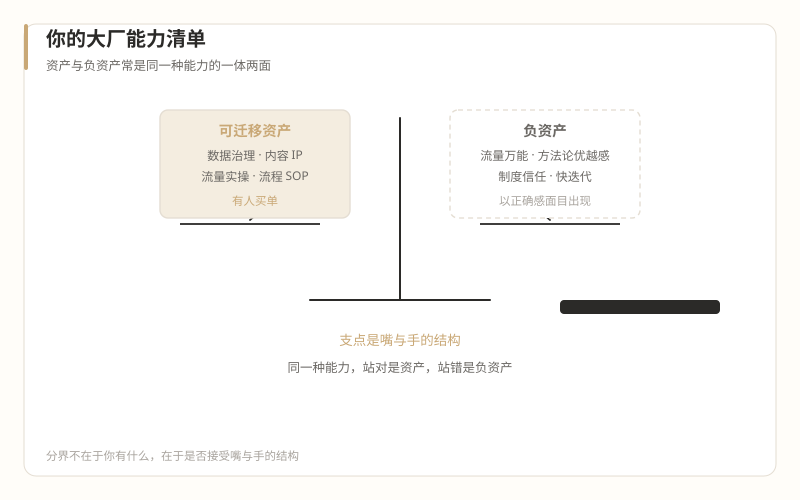

2怎么进
你的大厂能力清单——可迁移资产与负资产
本篇回答：大厂经验里哪些是这个行业的真资产，哪些是会坑你的负资产。全文是一份可打勾的自查清单，每项配"在岗第一个月的典型冲突场景"。

一、可迁移资产：四项，每项都有人买单
资产一：数据分析与数据治理
行业现状是"电子病历的普及让云存储的需求成为医美行业的刚需，数据治理更是获取精准目标客户群并对其进行服务管理的底层逻辑支撑"，同时"数据安全让每家机构忧心忡忡"（《又见中台》，2023-04-11）。机构手里有客户资产，但没有把客户资产经营起来的能力——这是大厂数据人的真实需求面。
第一个月怎么用：别提"数据中台"，先做数据考古。多数机构的历史数据躺在收银系统、Excel 和咨询师的私人微信里，把它们拼成一张能看的客户表，你就已经比 90% 的同行有价值了。
典型冲突场景：你发现机构不愿把客户数据放进任何系统——"即使做了私有化部署，人们还是担心客户流失"（同文）。这不是技术问题，是客户资产归属的信任问题，先解决信任，再谈系统。
资产二：内容与 IP 运营
医生 IP 是行业共识级的方向（《表达者红利》，2025-06-17），而"愿意做、做得好内容"的人在行业里稀缺。你的选题能力、脚本能力、账号运营经验是硬通货——但要通过合规窄门（见第 06 篇入口四）。
第一个月怎么用：把机构最资深医生的一次面诊过程，做成一条不违规的患者教育内容。能同时搞定医生配合和合规审核，这项资产就算激活了。
典型冲突场景：你习惯的爆款公式（对比图、疗效承诺、素人改造）大面积踩医疗广告红线，旧手艺要拆到零件级重新学合规（第 12 篇展开）。
资产三：流量实操（带警告标签）
获客是机构的第一痛点（"医美人对互联网关心的核心只有一个：获客"——2023-04-11），投放、本地生活运营、私域运营的手艺有真实市场。
警告标签：这项资产自带价值悖论的引信（第 02 篇）。用得好是帮机构获得可持续客源，用得差是把它推进低价螺旋。判断标准就一条：你拉来的客流，交付端接得住吗？
典型冲突场景：你做出一个漂亮的低价引流方案，老板当场拍板，医生和咨询师在执行端骂娘——因为你引来的客群消费力与机构定位错配，交付成本倒挂。方案上线前先问交付端，是大厂经验里"先对齐再动手"的正确迁移。
资产四：流程化与 SOP 能力
经营院长的工作清单里有一大块是"财务、税务、医政、法律、采购、库存等等一系列行政事物"，医生们不擅长、不关心，但"处理的过程他们并不关心，可是结果不允许出错"（《什么人能当医美机构的经营院长？（一）》，2018-10-26）。把杂乱事务变成不出错的流程，是你能提供的安静价值。
第一个月怎么用：挑一件没人愿管的脏活（随访流程、客户档案、投诉处理），写成 SOP 并跑通一个月。这种活不性感，但它是这个行业里最稀缺的"靠谱"证明。
典型冲突场景：你按大厂标准写 SOP，发现执行者（咨询师、护士、前台）没人看文档。这里的流程要长在检查表和口头交接里，不是 Confluence 里。
二、负资产：四项，每项都会以"正确感"的面目出现
负资产的危险在于：它们在旧世界全是优点。人不会防御自己引以为傲的东西。
负资产一："流量万能"心态
把获客当万能解的心态，会直接撞上价值悖论："电商不用承担后果，所以对医疗交付品质漠不关心，只关心价格和收割的份额"，而其结果是"大量的机构只能挣扎在生存底线上"（《电商医美的悖论》，2025-04-01）。
典型翻车：入职三个月，用流量打法把到店量翻了倍，同时把机构的利润和医生的工作量打进ICU。你复盘时认为自己执行完美——每个环节确实完美，是框架在错误的行业里运行。
负资产二：平台方法论优越感
"医美行业其实从来就没有出现过像样的中台"（2023-04-11）。注意：这不是说行业落后等着你去建设。同一篇文章里写了一个对大厂人极不舒服的事实：阿里巴巴自己把建了七年半的中台拆了，"中台脱离业务，就会变成业务的敌人"，被拆的原因包括技术官僚、与业务端博弈、数据安全隐患。连最有钱的互联网公司都发现脱离业务的中台是负担，一个十人规模的医美机构需要你的"中台思维"的概率，值得在下提案前算一算。
典型翻车：入职演讲讲"互联网方法论赋能传统行业"，台下的营销总监（从咨询师干上来的）心里想的是：这人说的是人话吗，客人到底从哪来？
负资产三：用职级和流程替代人身信任
这个行业的运转靠"共同核心利益联盟"与信任：经营院长和医生"双方的合作一定是基于共同的根本利益和核心利益"，你要与医生"共同探索一条大家都'舒服'的相处模式"（《整形医生的心思，经营院长要怎么猜？》，2019-04-16）。大厂的协作靠制度信任——流程保证你不坑我，我就能跟你合作；这里靠人身信任——我不信你这个人，流程是废纸。
典型翻车：你想推进一个项目，按大厂习惯发会议邀请、拉对齐会、要书面确认。医生全程配合流程，然后按自己的意思办——因为在他们的世界里，你的流程不具备任何约束力。信任要先于流程存在，流程只是信任的记录。
负资产四：快迭代习惯撞上医疗的不可逆
"医美无法做到 7 天无理由退货，因为绝大多数治疗不可逆。"（2023-04-11）大厂的产品迭代以试错为荣：上线、看数据、回滚、再来。医疗交付没有回滚键——一次注射、一台手术，错了就是错了。A/B 测试思维在获客端可以用，在交付端有伦理和物理的双重边界。
典型翻车：把"小步快跑试一下"说进涉及方案调整的会议，医生脸色当场变了。在你这里是敏捷，在医生那里是对他手艺和患者安全的不尊重。
三、翻译器：中台 / 赋能
直译（成立处）：概念可对译。机构确实需要信息化、标准化、数据能力，你的中台经验里有可拆用的零件。
失真处：大厂中台的存在前提是多业务线协同的规模经济；医美机构是单体小组织，"赋能"在这里的实际含义是"帮我把获客和客户经营这两件事管好"。行业要的不是中台，是能跑的系统加一个靠谱的人。
大厂人的典型错误：把"降维打击"当卖点。市场不采购你的世界观，只采购你的具体产出——这句话值得写在入职第一周的便签上。
四、自查清单
对照打勾。资产侧勾得越多，第 09 篇谈 offer 的筹码越足；负资产侧勾得越多，第 10 篇的 180 天心防要筑得越厚。
| 类别 | 项目 | 我有吗 | 第一个月的用法 |
|---|---|---|---|
| 资产 | 数据分析与治理 | ☐ | 数据考古，先拼客户表 |
| 资产 | 内容与 IP 运营 | ☐ | 一条不违规的医生教育内容 |
| 资产 | 流量实操 | ☐ | 方案先过交付端这一关 |
| 资产 | 流程与 SOP | ☐ | 一件脏活做穿一个月 |
| 负资产 | 流量万能心态 | ☐ | 警惕：把增长做成亏损加速器 |
| 负资产 | 方法论优越感 | ☐ | 警惕：市场只买产出不买世界观 |
| 负资产 | 制度信任习惯 | ☐ | 警惕：先建人身信任再谈流程 |
| 负资产 | 快迭代本能 | ☐ | 警惕：交付端没有回滚键 |
最后一句实话：资产和负资产常常是同一种能力的一体两面——数据能力用对了是资产、用成"数据中台梦"就是负资产；流量能力用对了是资产、用成低价螺旋就是负资产。分界不在于你有什么，在于你是否接受第 02 篇那个结构：消费的嘴，医疗的手。
键盘 ← → 可翻篇，手机屏幕左右边缘滑动同样有效